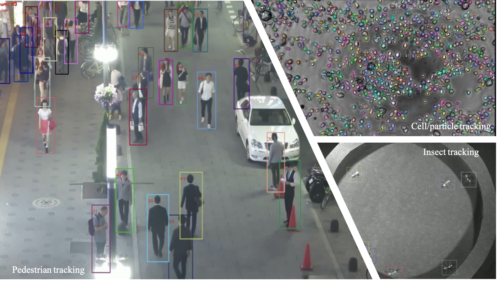
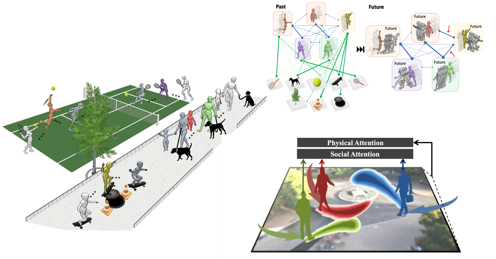
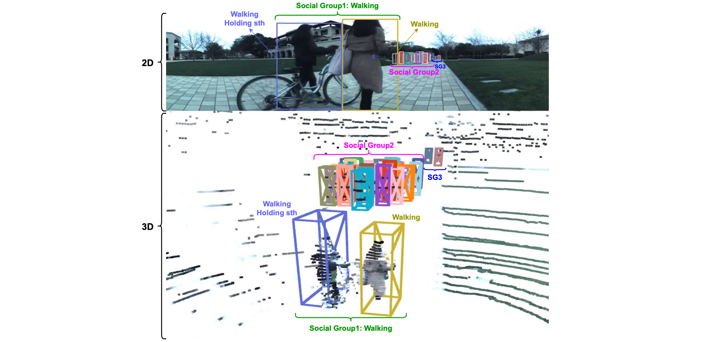
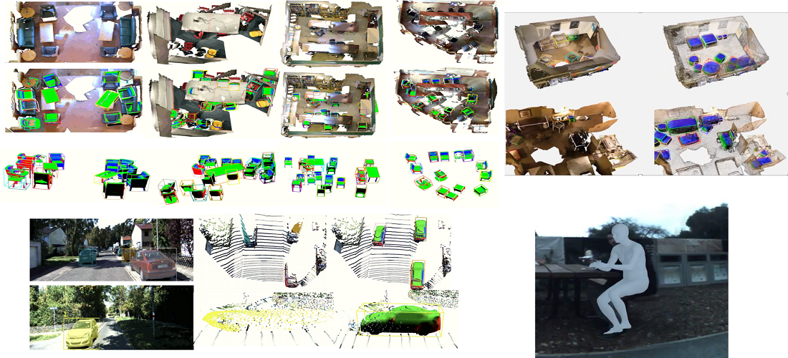
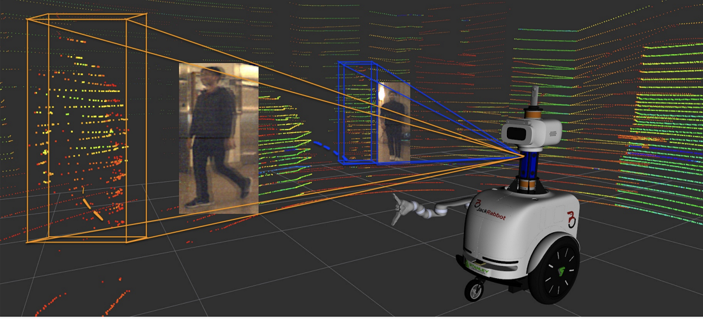
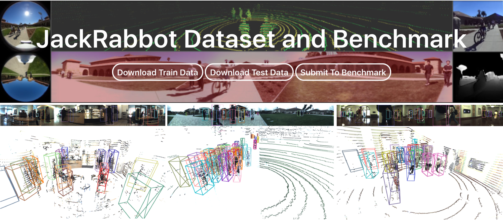
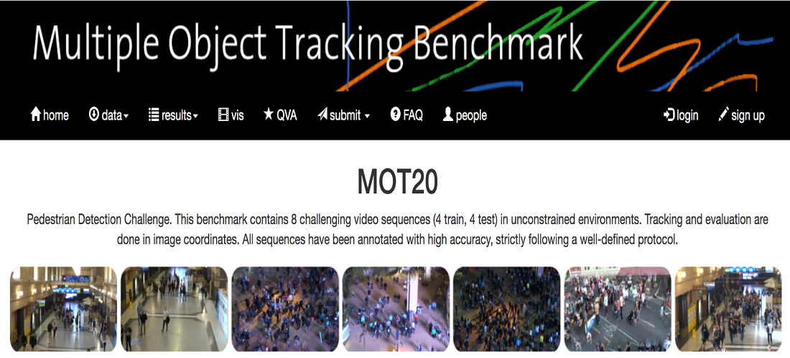
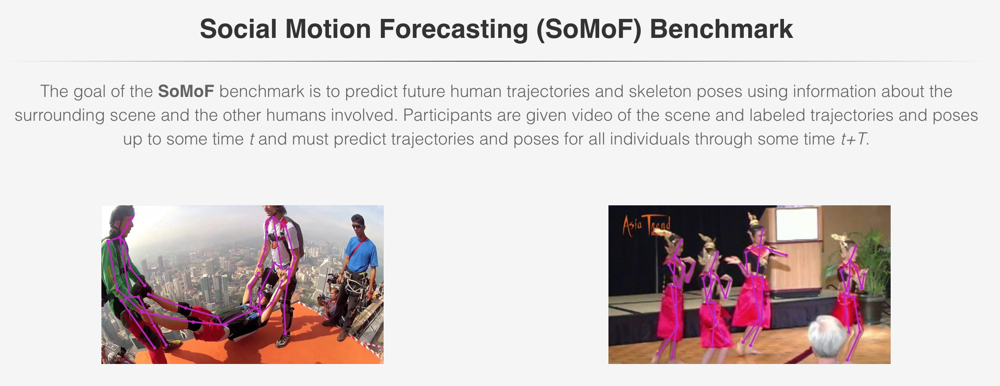
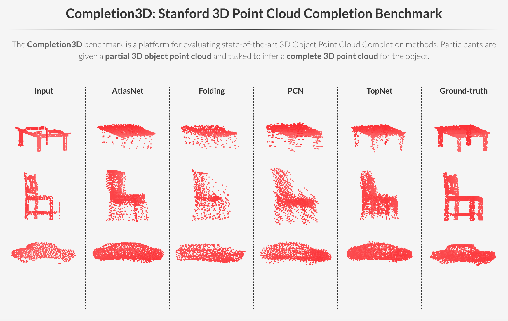

Monash University
This section contains some information about our lab's active research projects, our public datasets and benchmarks.

Visually discriminating the identity of multiple (similar looking) objects in a scene and creating individual tracks of their movements over time, namely multi-object tracking (MOT), is one of the basic yet most crucial vision tasks, imperative to tackle many real-world problems in surveillance, robotics/autonomous driving, health and biology. While being a classical AI problem, it is still very challenging to design a reliable multi-object tracking (MOT) system capable of tracking an unknown and time-varying number of objects moving through unconstrained environments, directly from spurious and ambiguous measurements and in presence of many other complexities such as occlusion, detection failure and data (measurement-to-objects) association uncertainty. In this project, we aim to design a reliable end-to-end MOT framework (without the use of heuristics or postprocessing), addressing the key tasks like track initiation and termination, as well as occlusion handling.
.

The ability to forecast human trajectory and/or body motion (i.e. pose dynamics and trajectory) is an essential component for many real-world applications, including robotics, healthcare, detection of perilous behavioral patterns in surveillance systems. However, this problem is very challenging; becasue there could potenitally exist several valid possibilities for a future human body motion in many similar situations and human motion is naturally influneced by the context and the component of the scene/ environment and the other people's behaviour and activities. In this project, we aim to develop such a physically and socially plausible framework for this problem.

In this project, we tackle the problem of simultaneously grouping people by their social interactions, predicting their individual actions and the social activity of each social group, which we call the social task.

3D localisation, reconstruction and mapping of the objects and human body in dynamic environments are important steps towards high-level 3D scene understanding, which has many applications in autonomous driving, robotics interaction and navigation. This project focuses on creating the scene representation in 3D which gives a complete scene understanding i.e pose, shape and size of different scene elements (humans and objects) and their spatio-temporal relationship.

To operate, interact and navigate safely in dynamic human environments, an autonomous agent, e.g. a mobile social robot, must be equipped with a reliable perception system, which is not only able to understand the static environment around it, but also perceive and predict intricate human behaviours in this environment while considering their physical and social decorum and interactions.
Our aim is to design a multitask perception system for an autonomous agent, e.g. social robot. This framework includes different levels and modules, from basic-level perception problems to high-level perception and reasoning. This project also work on creating a large-scale dataset, used for the training and evaluation of such a multi-task perception system.

.
.

.
.

.

.